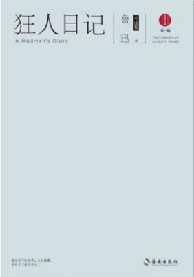
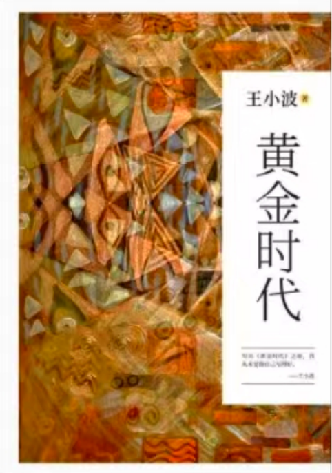
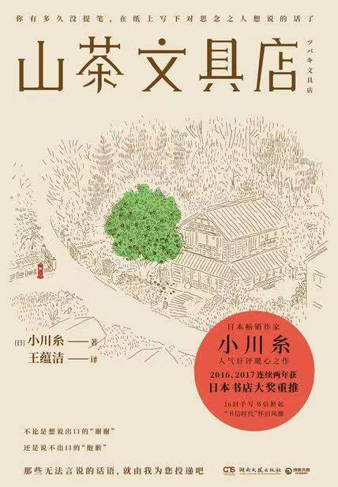

-
《传习录》
《传习录》是哲学著作，由王阳明的门人弟子对其语录和信件进行整理编撰而成。王阳明是中国明代哲学家、宋明理学中心学一派的代表人。此书记载了他的语录和论学书信。“传习”一词源出自《论语》中的“传不习乎”一语。
-
《叫魂：1768年中国妖术大恐慌》
该书讲述了在中国的千年帝制时代，清高宗弘历可谓是空前绝后的一人，然而在乾隆盛世达到登峰造极的时候，整个大清的政治与社会生活却被一股名为“叫魂”的妖术搅得天昏地暗。
-
《狂人日记》
《狂人日记》是鲁迅创作的第一个短篇白话文日记体小说，也是中国第一部现代白话小说，写于1918年4月。该文首发于1918年5月15日4卷5号的《新青年》月刊，后收入《呐喊》集，编入《鲁迅全集》第一卷。
-
《人间失格》
《人间失格》以“我”看到叶藏的三张照片后的感想开头，中间是叶藏的三篇手记，而三篇手记与照片对应，分别介绍了叶藏幼年、青年和壮年时代的经历，描述了叶藏是如何一步一步走向丧失为人资格的道路的。
-
《明朝那些事儿》
《明朝那些事儿》主要讲述的是从1344年到1644年这三百年间关于明朝的一些故事 。以史料为基础，以年代和具体人物为主线，对明朝十六帝和其他王公权贵和小人物的命运进行全景展示，尤其对官场政治、战争、帝王心术着墨最多，并加入对当时政治经济制度、人伦道德的演义。
-
《如果这就是宋史》
该书从宋太祖赵匡胤充满传奇和争议的一生说起，全程解析大宋王朝的建立以及帝国往事的历史迷局。
-
《1988--我想和这个世界谈谈》
《1988--我想和这个世界谈谈》是中国作家韩寒所著的一部长篇小说。在该书中，韩寒采用了两条叙事路线，即现实与回忆交替进行。他以一种“在路上”的方式，试图与这个世界谈谈，试图寻找令人信服的价值。
-
《活着》
《活着》讲述了在大时代背景下，随着内战、三反五反、大跃进、“文化大革命”等社会变革，徐福贵的人生和家庭不断经受着苦难，到了最后所有亲人都先后离他而去，仅剩下年老的他和一头老牛相依为命。
-
《黄金时代》
王小波《黄金时代》的问世，实现了知青文学的突破。作品中对性爱的正面书写，对现实的批判和嘲讽，对人生存状态的反思，对人性自由和本真的彰显，迥异于20世纪90年代之前的知青小说。
-
《秋园》
1914年，世上有了“秋园”这个人。1918年，汉语有了“她”这个字。秋园，她来过，挣扎过，绝望过，幸福过。今天，她80岁的女儿，把普普通通的她，讲给世界听。
-
《山茶文具店》
在镰仓，有一家帮人代笔的文具店，每代店主均由女性担任，只要有委托便会接受，即使是餐厅的菜单也会帮忙。
-
《万历十五年》
从“大历史观”的研究视角出发，选取了明朝万历十五年（1587年）作为考察切入点，运用历史小说的叙事模式和传记体式的章节，通过对关键历史人物悲惨命运的描述，探析了晚明帝国走向衰落的深刻原因。
我的书单